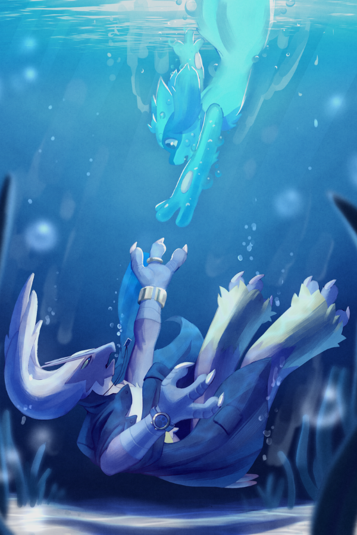

Do you believe in magic?
When an unexpected kidnapping flips the region on its head, the pokémon of Sylva Skies must band together to unravel the science of the unknown. Every clue reveals another mystery, and every puzzle draws them further from home.
Will they save their world in time? Or discover a new one along the way?
Follow Kloud, a go-lucky Umbreon with a knack for trouble; Saphero, an Espeon with both paws grappled in science and feelings he can't comprehend; and Inferno, the Blaziken detective who weaves every piece left behind, one tragedy at a time.
In a tale of love, adventure, mystery, and fate, follow our group of heroes as they embrace the secrets of their universe.
